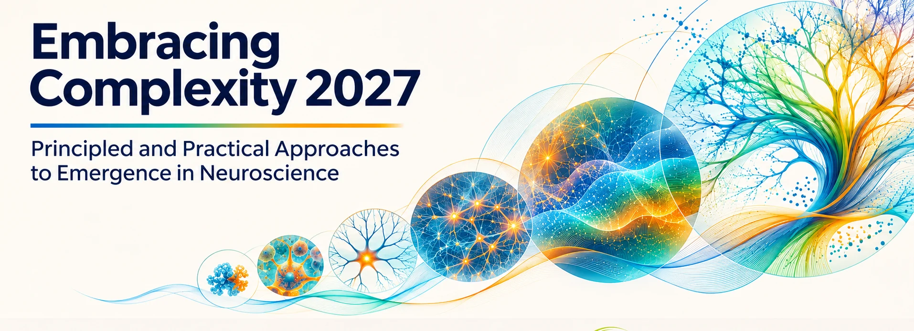

Emergence & explanation
Formal approaches to emergence, causal structure and multiscale organization.

IFISC (CSIC–UIB) & Universitat de les Illes Balears · Supported by IBRO

IBRO-supported school
Embracing Complexity 2027 is supported by the International Brain Research Organization (IBRO) through the IBRO Schools Support programme. This support helps expand access to international, interdisciplinary neuroscience training.
01 / About the school
Embracing Complexity 2027 brings together early-career researchers from neuroscience, cognitive science, physics, mathematics, computation and related fields to study how collective neural and biological phenomena arise from interacting components.
The school combines conceptual lectures with hands-on computational tutorials, posters and small-group discussions. Rather than treating emergence as one definition or technique, the programme introduces complementary formal perspectives and connects them to neuroscientific questions.
Building on Embracing Complexity 2025, this edition places a stronger emphasis on neuroscience, reproducible Python methods and interdisciplinary collaboration.
02 / Scientific focus
Formal approaches to emergence, causal structure and multiscale organization.
Integrated processes, experience, prediction, learning and behaviour.
Collective activity, functional interactions and neural organization.
Information theory, dynamical systems and reproducible Python workflows.
Embodied, social and biological perspectives on emergence.
Posters, discussions, mentoring and future collaborations.
03 / Faculty
Faculty listed in the formal school application.
University of Sussex · United Kingdom
Emergence & consciousnessUniversity of Cambridge · United Kingdom
Neural dynamics & predictive informationICREA / Universitat Pompeu Fabra · Spain
Cognition, ecology & origins of lifeMax Planck Institute for Neurobiology of Behavior · Germany
Memory, cognition & learningIstituto per le Applicazioni del Calcolo · Italy
Fractal analysis of brain dynamicsImperial College London · United Kingdom
Quantitative emergence · TutorialNeuroPSI, CNRS · France
Dynamical closure · TutorialUniversity of Lisbon · Portugal
Large-scale brain dynamicsTechnical University of Denmark · Denmark
Human coordination & social networksImperial College London · United Kingdom
Information-theoretic approaches · TutorialRoma Tre University · Italy
Emergence & cognitive evolutionUniversity of Sussex · United Kingdom
Quantitative approaches to emergence04 / Programme
Conceptual perspectives on emergence and neural systems.
Computational training using reproducible Python notebooks.
Research presentations, discussions and interdisciplinary exchange.
Mentoring and collaborative exercises.
05 / Applications
We aim to welcome MSc students, PhD candidates and early-career postdoctoral researchers across disciplines. The planned selection emphasizes scientific motivation, training benefit and international access.
Applications are not yet open.
06 / People behind the school
Organizing committee listed in the formal school application.
Universitat de les Illes Balears · Spain
IFISC (CSIC–UIB) · Spain
NeuroPSI, CNRS · France
McGill University · Canada
Imperial College London · United Kingdom
Barcelona Computational Foundation · Spain
Hosts & contact
Organized through IFISC (CSIC–UIB) and the Department of Psychology at the Universitat de les Illes Balears.